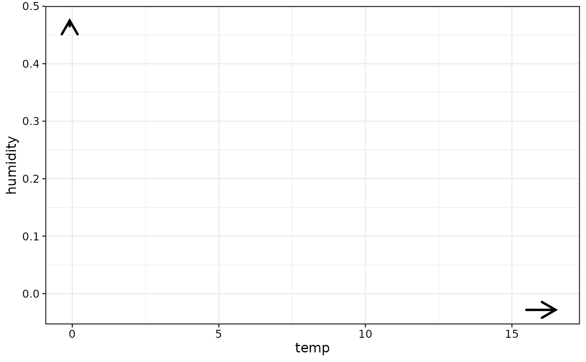

The FME is a forward difference in prediction due to a specified change in feature values.
Public fields
featurevector of features
predictorPredictorobjectstep.sizevector of step sizes for features specified by "feature"
data.stepthe data.table with the data matrix after the step
ep.methodstring specifying extrapolation detection method
compute.nlmlogical specifying if NLM should be computed
nlm.intervalsnumber of intervals for computing NLMs
step.type"numerical"or"categorical"extrapolation.idsvector of observation ids classified as extrapolation points
resultsdata.table with FMEs and NLMs computed
ameAverage Marginal Effect (AME) of observations in
resultsanlmAverage Non-linearity Measure (ANLM) of observations in
resultscomputedlogical specifying if compute() has been run
Methods
Method new()
Create a new ForwardMarginalEffect object.
Usage
ForwardMarginalEffect$new(
predictor,
feature,
step.size,
ep.method = "none",
compute.nlm = FALSE,
nlm.intervals = 1
)Arguments
predictorPredictorobject.featureFeature vector.
step.sizeVector of step sizes.
ep.methodString specifying extrapolation detection method.
compute.nlmCompute NLM with FMEs? Defaults to
FALSE.nlm.intervalsHow many intervals for NLM computation. Defaults to
1.
Examples
# Train a model:
library(mlr3verse)
library(ranger)
data(bikes, package = "fmeffects")
forest = lrn("regr.ranger")$train(as_task_regr(x = bikes, id = "bikes", target = "count"))
# Create an `ForwardMarginalEffect` object:
effects = ForwardMarginalEffect$new(makePredictor(forest, bikes),
feature = c("temp", "humidity"),
step.size = c(1, 0.01),
ep.method = "envelope")Method compute()
Computes results, i.e., FME (and NLMs) for non-extrapolation points, for a ForwardMarginalEffect object.
Method plot()
Plots results, i.e., FME (and NLMs) for non-extrapolation points, for an FME object.
Usage
ForwardMarginalEffect$plot(with.nlm = FALSE, jitter = c(0, 0))Arguments
with.nlmPlots NLMs if computed, defaults to
FALSE.jitterJitters data. A two-dimensional numeric vector, corresponds to
"width"and"height". See?ggplot2::geom_jitterfor details. Not available ifstep.typeis categorical. Defaults to no jittering, i.e., c(0, 0).
Examples
## ------------------------------------------------
## Method `ForwardMarginalEffect$new`
## ------------------------------------------------
# Train a model:
library(mlr3verse)
library(ranger)
data(bikes, package = "fmeffects")
forest = lrn("regr.ranger")$train(as_task_regr(x = bikes, id = "bikes", target = "count"))
# Create an `ForwardMarginalEffect` object:
effects = ForwardMarginalEffect$new(makePredictor(forest, bikes),
feature = c("temp", "humidity"),
step.size = c(1, 0.01),
ep.method = "envelope")
## ------------------------------------------------
## Method `ForwardMarginalEffect$compute`
## ------------------------------------------------
# Compute results:
effects$compute()
## ------------------------------------------------
## Method `ForwardMarginalEffect$plot`
## ------------------------------------------------
# Compute results:
effects$plot()
